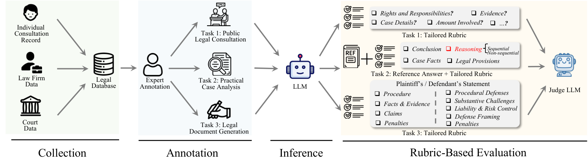
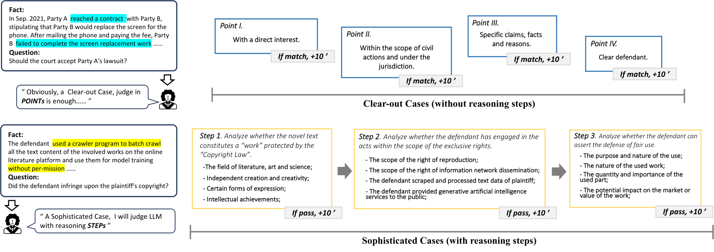
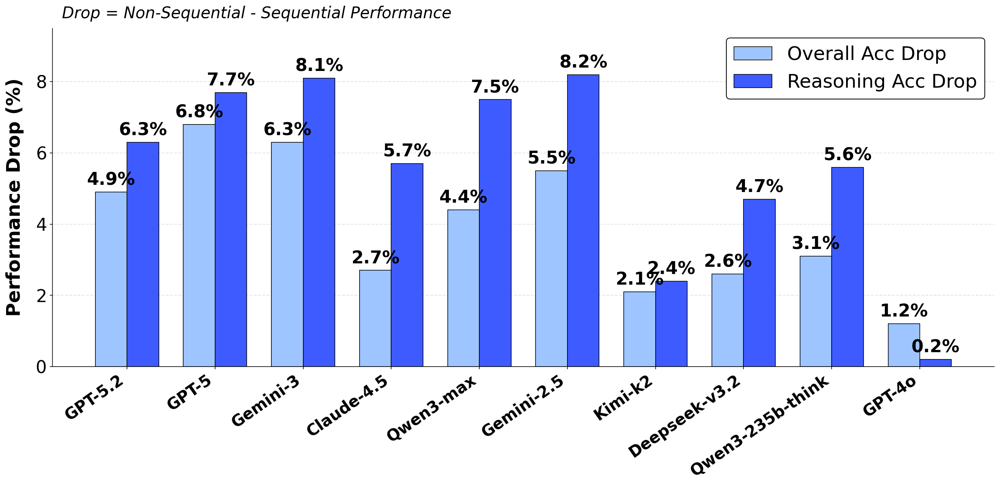

一句话读懂这篇论文
旧基准为什么不够
许多法律 benchmark 更像考试：问题结构清楚、事实已经整理好、输出目标单一。真实法律工作则要求模型先处理用户的叙述噪声，再判断哪些事实有法律意义，并考虑程序和策略后生成专业文书。
真实用户会模糊表达、遗漏事实、带有情绪甚至使用错误法律术语；标准化 QA 通常跳过了信息重构这一步。
只看结论、引用法条或 ROUGE，可能把“结论碰巧正确但推理过程危险”的回答判为高分。
三类任务对应三种工作场景
框架图：从数据采集到 rubric 评测

PLawBench 将数据采集、专家标注、模型推理和 rubric-based evaluation 串成完整链路。
公开法律咨询
从含糊、情绪化的用户叙述中识别法律问题和关键事实，并通过追问澄清信息。实务案件分析
整合案件事实、法律规则、时效和程序要求，完成有逻辑的权利义务与结果分析。法律文书生成
从杂乱的当事人叙述中提取事实，制定诉讼策略并生成结构规范、论证连贯的文书。| 任务 | 问题数 | 平均输入长度 | rubric 数 | 平均/题 |
|---|---|---|---|---|
| 公开法律咨询 | 60 | 1171 | 550 | 21 |
| 实务案件分析 | 750 | 692 | 11,000 | 14.1 |
| 法律文书生成 | 40 | 2574 | 900 | 23 |
不是一个总分，而是六个法律能力维度
Rubric 示例：检查推理链，而不只看结论

细粒度 rubric 能识别表面正确、但事实识别或法律推理过程存在缺陷的回答。
案件分析特别提高“Reasoning”权重：法律条文和事实只是大小前提，真正拉开差距的是模型能否解释具体事实为什么被归入某个法律概念，并保持整条推理链一致。
数据来自真实材料，人工投入很重
数据来源包括中国裁判文书、法律咨询记录和顶级律所整理的复杂案例。研究团队筛选并匿名化后形成 850 个代表性问题，由 39 名通过法律职业资格考试的专家参与标注，其中 17 名资深标注者负责验证。平均每个数据实例需要约 3 小时。
包括模糊叙述、情绪表达、冗余信息、误用法律术语和不合理诉求，让模型必须先整理事实再分析。
先定义任务类型的推理框架，再针对具体案件制定评分点，因此不会用同一把尺子评价咨询和起诉状。
总体不强，且不同任务暴露不同短板
| 模型 | 总体 | 案件分析 | 公开咨询 | 文书生成 |
|---|---|---|---|---|
| GPT-5.2 | 69.67 | 66.37 | 48.59 | 58.25 |
| GPT-5 | 67.76 | 62.92 | 34.18 | 61.05 |
| Claude Opus 4.5 | 66.47 | 68.00 | 53.61 | 56.54 |
| Gemini 3.0 Pro | 66.35 | 64.95 | 46.42 | 63.84 |
| GPT-4o | 35.76 | 41.66 | 15.82 | 17.81 |
实验结果图：不同任务与维度的表现差异

模型在不同任务和评价维度上的能力并不均衡，不能用单一总分替代分项诊断。
案件分析整体分数相对更高，但“公开法律咨询”普遍更难：模型需要主动发现缺失事实并追问，而不是在结构化事实中做匹配。文书生成也要求模型完成事实过滤、关系分析、策略规划后再写作，不能用表面语言质量替代前置推理。
这篇论文真正贡献了什么
把法律任务拆成事实识别、规则应用、程序策略和文书规范，能定位错误发生在哪一步。
一个结论即使正确，如果缺少关键事实、法条适用条件错误或程序建议不可执行，也不应得到高分。
PLawBench 与 InsufficiencyBench 互相补充：前者测完整实务工作流，后者专门测模型能否意识到信息还不够。
局限与工程启示
落地法律 Agent 时，建议同时监控：关键事实召回、法条适用条件、程序时效、澄清问题质量、结论与证据一致性，以及最终文书的规范合规，而不是只看一个平均准确率。